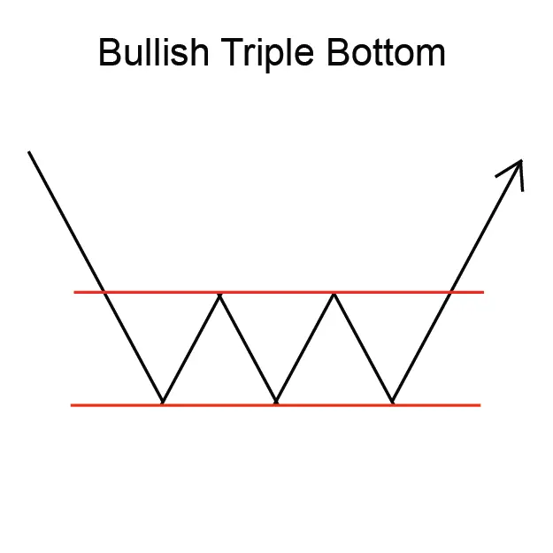
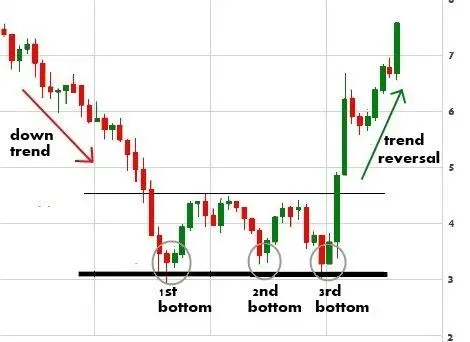

Implicaciones
Un Triple Bottom se considera una señal de aumento, indicando una posible reversión de la tendencia descendente actual a una nueva tendencia ascendente.
Descripción
El Triple Bottom se compone de tres bajas agudas, todas a aproximadamente el mismo nivel de precio. Los inversionistas deben señalar que las tres bajas tienden a ser agudas. Mientras que las tres bajas deben ser agudas y distintas, las altas del patrón pueden parecer redondeadas. El patrón es completo cuando los precios suben por encima del máximo de la formación. El punto más alto se llama "punto de confirmación".
Las alturas deben ser bastante redondeadas en forma, aunque no es absolutamente necesario para la validez del patrón.
El Triple Bottom es un patrón de reversión e ilustra una tendencia descendente en el proceso de convertirse en una tendencia ascendente. Por lo tanto, es vital para la validez del patrón que comience con los precios que se mueven en una tendencia descendente.

En general, el volumen en un Triple Bottom tiende a tender hacia abajo a medida que se forman los patrones. El volumen tiende a ser más ligero en cada bajo sucesivo. El volumen luego se eleva a medida que los precios suben por encima del punto de confirmación y entran en la nueva tendencia ascendente.
Un inversor no debe descartar un Triple Bottom si el volumen no muestra este patrón. El patrón puede tardar varios meses en formarse y, durante ese tiempo, el volumen puede ser irregular e impredecible. El volumen debe ser más alto en los bajos que en los días que conducen a los más bajos.
Características importantes
A continuación se muestran características importantes que deben tenerse en cuenta para un Triple Bottom.
Duración del patrón
El Triple Bottom suele tomar más tiempo que otros patrones para desarrollarse. Cuanto más tiempo tarda el patrón en formarse, mayor será la importancia del movimiento de los precios una vez que se produzca la breakout. Necesidad de una tendencia hacia abajo El Triple Bottom es un patrón de reversión. Esto significa que es esencial para la validez del patrón que comience con una tendencia descendente en el precio de una acción.
Volumen
Es típico ver que el volumen disminuye a medida que avanza el patrón. Sin embargo, esto cambia cuando se produce una brecha. Una breakout válida estará acompañada de una explosión en volumen. Algunos expertos están menos preocupados al ver una tendencia de disminución constante en el volumen a medida que el patrón avanza a través de sus tres mínimos.
Retiro después de la breakout
Es muy común en el Triple Bottom ver un retroceso después de la breakout.
Simetría
Los inversores que buscan un Triple Bottom válido deben estar atentos a un patrón que muestra un montón de espacio blanco a medida que se desarrolla. El patrón debe mostrar una progresión bastante regular entre los tres bajos bien separados. La simetría de este patrón es algo que debería captar la vista.
Comercio
Duración de las consideraciones
Considere la duración del patrón y su relación con sus horizontes de tiempo de negociación. La duración del patrón se considera como un indicador de la duración de la influencia de este patrón. Cuanto más largo sea el patrón, más tiempo tardará en que el precio se mueva a su meta. Cuanto más corto sea el patrón, más rápido será el movimiento del precio. Si está considerando una oportunidad de comercio a corto plazo, busque un patrón con una duración corta. Si está considerando una oportunidad de comercio a largo plazo, busque un patrón con una duración más larga.
Precio objetivo
El precio objetivo proporciona una importante indicación sobre el movimiento potencial de los precios que este patrón indica. Considere si el precio objetivo para este patrón es suficiente para proporcionar rendimientos adecuados después de que sus costos (como comisiones) se hayan tenido en cuenta. Una buena regla es que el precio objetivo debe indicar un retorno potencial de más del 5% antes de que un patrón se considere útil. Sin embargo, debe tener en cuenta el precio actual y el volumen de acciones que tiene la intención de negociar. También, compruebe que el precio objetivo ya no se ha alcanzado.
Inbound
Tendencia La tendencia de entrada es una característica importante del patrón. Una tendencia de entrada superficial puede indicar un período de consolidación antes de que comience el movimiento de los precios indicado por el patrón. Busque una tendencia de entrada que sea más larga que la duración del patrón. Una buena regla es que la tendencia de entrada debe ser al menos dos veces la duración del patrón.
Criterios que respaldan
Apoyo y resistencia
Busque una región de apoyo o resistencia alrededor del precio objetivo. Una región de consolidación de precios o una fuerte línea de apoyo y resistencia en o alrededor del precio objetivo es un indicador fuerte de que el precio se moverá a ese punto.
Ubicación de la media móvil
El Triple Bottom debe estar por debajo de la media móvil. Compara la ubicación del patrón con una media móvil de longitud adecuada. Para patrones de corta duración, utilice una media móvil de 50 días, para patrones más largos utilice un promedio móvil de 200 días.
Tendencia de media móvil
La media móvil debe cambiar de dirección dentro de la duración del patrón y debe dirigirse en la dirección indicada por el patrón. Para patrones de corta duración, utilice una media móvil de 50 días, para patrones más largos utilice un promedio móvil de 200 días.
Volumen
Un fuerte pico de volumen el día de la confirmación del patrón es un indicador fuerte en apoyo del potencial para este patrón. El pico de volumen debe estar significativamente por encima de la media del volumen durante la duración del patrón. Además, el volumen dentro de la duración del patrón debería estar disminuyendo en promedio.
Otros patrones
Otros patrones de reversión (como las líneas de engulfamiento de Bullish y Bearish y las islas) que ocurren en las cumbres y los valles indican una fuerte resistencia en esos puntos. La presencia de estos patrones dentro de un Triple Bottom es una fuerte indicación en apoyo de este patrón.
Criterios que refuten
Sin aumento de volumen en la confirmación
La falta de un pico de volumen el día de la confirmación del patrón es una indicación de que este patrón puede no ser fiable. Además, si el volumen ha permanecido constante, o estaba aumentando, durante la duración del patrón, entonces este patrón debe considerarse menos fiable.
Ubicación de la media móvil
El Triple Bottom debe estar por debajo de la media móvil. Compara la ubicación del patrón con una media móvil de longitud adecuada. Para patrones de corta duración, utilice una media móvil de 50 días, para patrones más largos utilice un promedio móvil de 200 días. Si el Triple Bottom está por encima de la media móvil entonces este patrón debe considerarse menos fiable.
Tendencia de media móvil
Una media móvil que está en tendencia en la dirección opuesta a la indicada por el patrón es una indicación de que este patrón no es fiable. Mira la dirección de la tendencia de la media móvil. Para patrones de corta duración, utilice una media móvil de 50 días, para patrones más largos utilice un promedio móvil de 200 días.
Tendencia de entrada corta
Una tendencia de entrada que es significativamente más corta que la duración del patrón es una indicación de que este patrón debe considerarse menos confiable.
Comportamiento subyacente
El patrón Triple Bottom se compone de tres bajas agudas, todas a aproximadamente el mismo nivel de precio. Cuando los precios alcanzan el primer mínimo, los vendedores se vuelven escasos, creyendo que los precios han caído demasiado bajo. Si un vendedor está de acuerdo en vender, los compradores son rápidos para comprar a un buen precio. Entonces los precios volvieron a subir. Se establece el nivel de apoyo y las dos próximas bajas también son agudas y rápidas.
